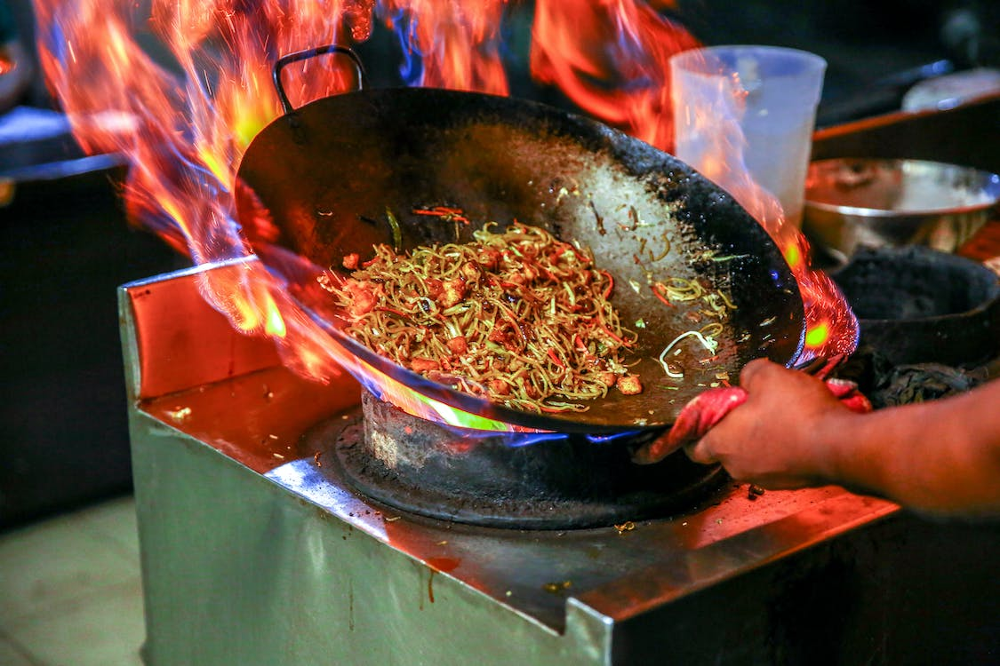

Meat Noodles
Back to homepage

Description
Quick, easy and delicious meat noodles recipe with a handful of ingredients!
Ingredients
- Any kind of instant noodles
- Any type of cooked meat
- Tomato paste
- Half an onion
- Spices
Steps
- Cut and pan fry the onion
- Add the tomato sauce and the cooked meat
- Fry until almost all water evaporates from the tomato sauce
- Add the noodles and amount of water based on the packaging of the noodles
- Add all the spices and flavours from the noodles
- Boil and stir in the pan until noodles are cooked
- Serve and enjoy!